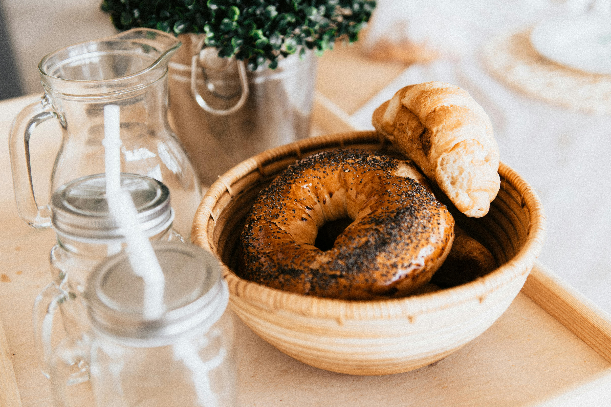

How to make Bagels

A delicious bagel recipe fo that authentic bagel flavor and texture
Ingredients
Bagels
- 1¼ cups of water
- 4½ cups of bread flour
- 3 tablespoons white sugar
- 1 teaspoon salt
- 2 tablespoons vegetable oil
- 1 tablespoon instant yeast
- 4 quarts of water
- 1 cup honey (optional)
Toppings
- 2 tablespoons poppy seeds (Optional)
- 2 tablespoons sesame seeds (Optional)
- 2 tablespoons dried onion flakes(Optional)
- 1 tablespoon coarse salt(Optional)
Steps
- Make bagels: Combine water, flour, sugar, salt, vegetable oil, and yeast in the bowl of a stand mixer fitted with the dough hook. Mix on low speed until dough is well-developed, about 8 minutes. To ensure the gluten has developed fully, cut off a walnut-sized piece of dough. Flour your fingers, and then stretch the dough: if it tears immediately, the dough needs more kneading. Fully developed dough shoudl form a thin translucent "windowpane."
- Transfer dough to a lightly oiled bowl, cover it with plastic wrap and a kitchen towel, and let it rise for 2 hours
- Punch dough down, place it on a lightly floured work surface, and use a knife or dough scraper to divide the dough into 6 pieces(or more, for smaller bagels). Roll each piece of dough into a sausage shape about 6 inches long. Join the ends to form a circle. Repeat with the remaining dough and let the bagels rest for 15 minutes
- Preheat the oven to 475 °F(245 ° C). Line a baking sheet with parchment paper. Arrange small plates with poppy seeds, sesame seeds, and onion flakes next to the baking sheet.
- Bring 4 quarts of water to a boil in a large pot. Add honey, if desired. Boil 3 bagels at a time, until they rise to the surface of the pot, about 1 minute per side. Remove bagels with a slotted spoon and place them on the lined baking sheet.
- Dip the tops of the wet bagels into the toppings and arrange them, seed-side up on the baking sheet. Sprinkle with coarse salt, if desired.
- Bake in the preheated oven until the bagels begin to brown, 15 to 20 minutes.
Home